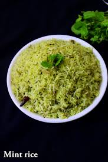

Pudina Rice

Pudina Rice is a flavorful, aromatic rice dish made with fresh mint (pudina) leaves and spices. This quick and easy recipe is perfect for a light lunch or dinner and pairs well with yogurt or curry.
Ingredients:
- For Rice:
- 1 cup basmati rice
- 2 cups water
- 1 teaspoon salt
- For Pudina Paste:
- 1 cup fresh mint leaves (pudina)
- 1/2 cup coriander leaves
- 1-2 green chilies (optional)
- 1-inch ginger piece
- 1/2 teaspoon cumin seeds
- For Tempering:
- 1 tablespoon ghee or oil
- 1/2 teaspoon cumin seeds
- 1/4 teaspoon turmeric powder
- 1/2 teaspoon red chili powder
- 1/4 cup thinly sliced onions
- 1/4 cup peas (optional)
- 1 cinnamon stick
- 1-2 cloves
- 1/2 teaspoon garam masala
Instructions:
-
Cook the Rice:
- Rinse the basmati rice under water until it runs clear. Soak it in water for 15-20 minutes.
- In a pot, add 2 cups of water and bring it to a boil. Add the soaked rice, salt, and cook until the rice is fluffy and fully cooked. Set aside.
-
Make Pudina Paste:
- In a blender, grind the mint leaves, coriander leaves, green chilies (if using), ginger, and cumin seeds into a smooth paste using a little water.
-
Prepare Tempering:
- Heat ghee or oil in a large pan. Add cumin seeds, cinnamon stick, cloves, and sauté until they splutter.
- Add sliced onions and sauté until they turn golden brown.
- Add turmeric powder, red chili powder, and peas. Stir and cook for a couple of minutes.
-
Combine the Rice and Pudina Paste:
- Add the prepared pudina paste to the pan and cook for 2-3 minutes, allowing the flavors to blend.
- Add the cooked rice and garam masala. Mix everything gently, ensuring the rice is well-coated with the masala.
-
Serve:
- Serve the Pudina Rice hot with yogurt, curry, or a side salad.
Serving:
Pudina Rice is a flavorful, refreshing dish perfect for lunch or dinner. Its minty aroma and spicy taste will leave your taste buds satisfied. Pair it with a side of yogurt or curry for a complete meal.😊